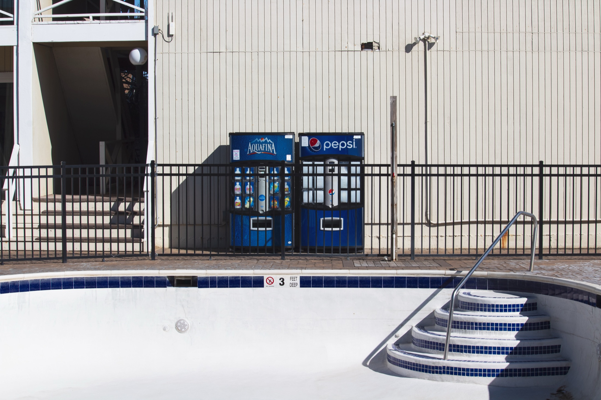
Ce Qui Demeure
Une exposition d’Arnaud de Turckheim
Du 4 au 19 novembre 2026
10 rue Lincoln, 75008 Paris
Commissariat de Pierre El Khoury
L’exposition
Dix-huit tirages, une première
Une décennie de photographie restée privée, montrée pour la première fois. Des images prises au Japon, en Californie, au Maroc, au Sénégal et en France, réunies autour d’une même question : qu’est-ce qui demeure lorsque tout continue de passer ?
- Dates
- 4 - 19 novembre 2026
- Lieu
- 10 rue Lincoln, 75008 Paris
- Commissariat
- Pierre El Khoury
- Œuvres
- 18 tirages pigmentaires
- Papier
- Hahnemühle Photo Rag Baryta
- Formats
- 40 × 60 cm, éditions de 5
80 × 120 cm, éditions de 3
Les œuvres
Liste des œuvres

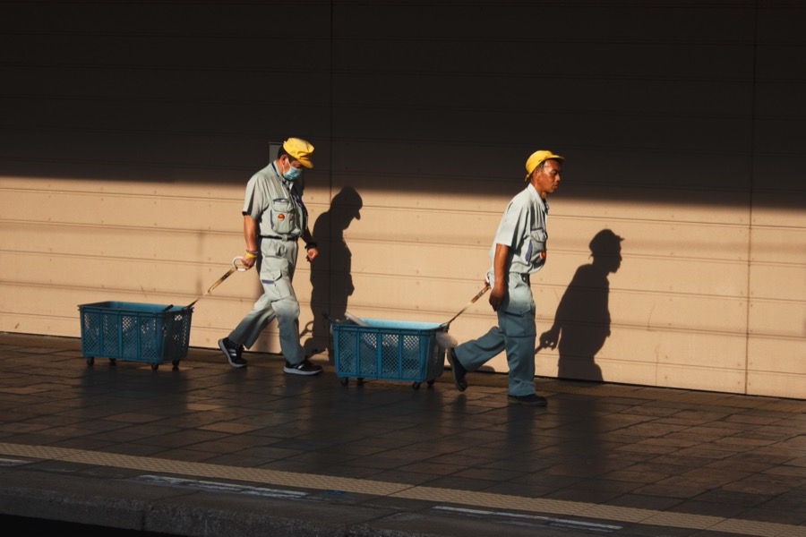
Les porteurs de lumière
Shimoda, juillet 2017
Tirage pigmentaire sur papier Hahnemühle Photo Rag Baryta, contrecollé sur aluminium
80 × 120 cm, hors cadre · Édition de 3

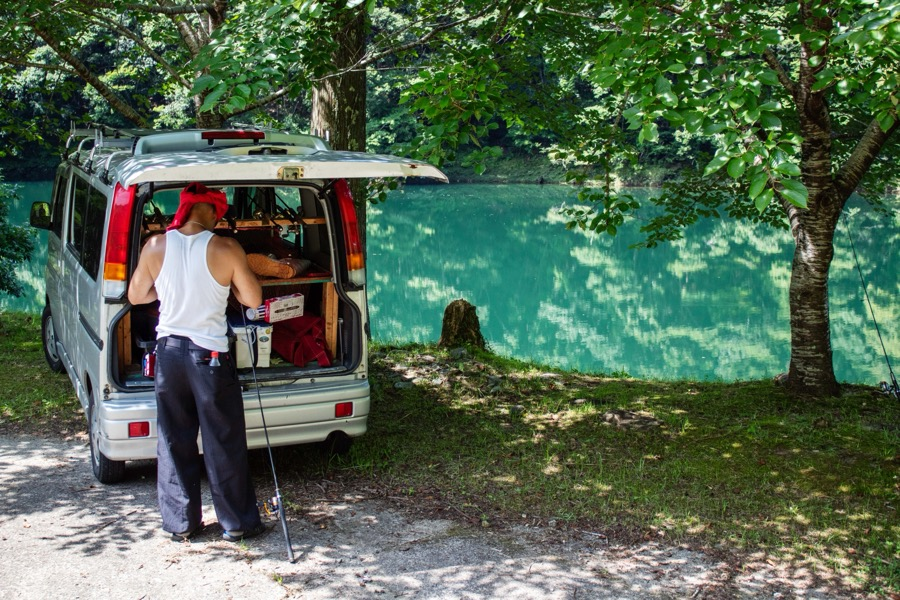
L’attente de l’eau
Ise, juillet 2017
Tirage pigmentaire sur papier Hahnemühle Photo Rag Baryta
40 × 60 cm, hors cadre · Édition de 5

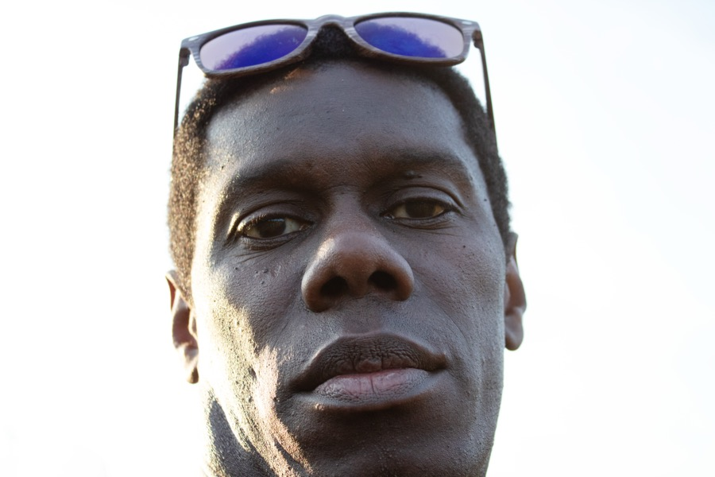
Le Témoin
Berlin, octobre 2017
Tirage pigmentaire sur papier Hahnemühle Photo Rag Baryta
40 × 60 cm, hors cadre · Édition de 5

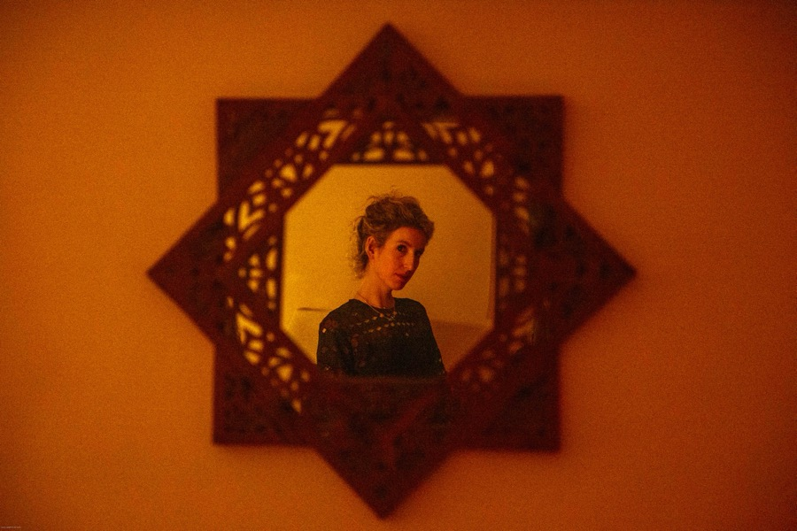
L’apparition
Provence, janvier 2018
Tirage pigmentaire sur papier Hahnemühle Photo Rag Baryta
40 × 60 cm, hors cadre · Édition de 5

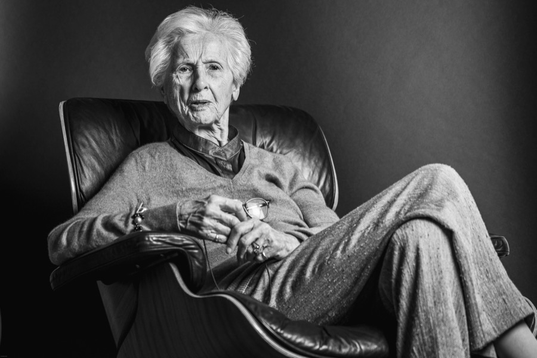
La Gardienne
Paris, janvier 2018
Tirage pigmentaire sur papier Hahnemühle Photo Rag Baryta, contrecollé sur aluminium
80 × 120 cm, hors cadre · Édition de 3

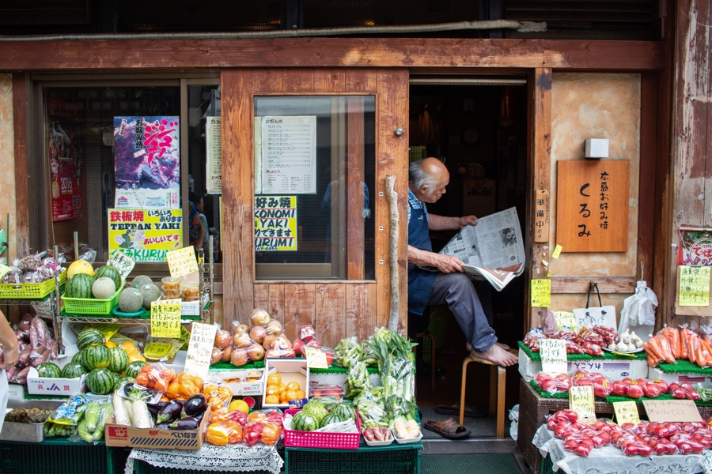
Le temps suspendu
Iidabashi, juin 2017
Tirage pigmentaire sur papier Hahnemühle Photo Rag Baryta
40 × 60 cm, hors cadre · Édition de 5

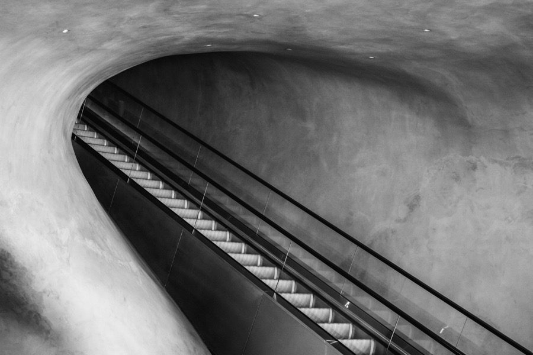
L’ascension
Los Angeles, avril 2017
Tirage pigmentaire sur papier Hahnemühle Photo Rag Baryta
40 × 60 cm, hors cadre · Édition de 5

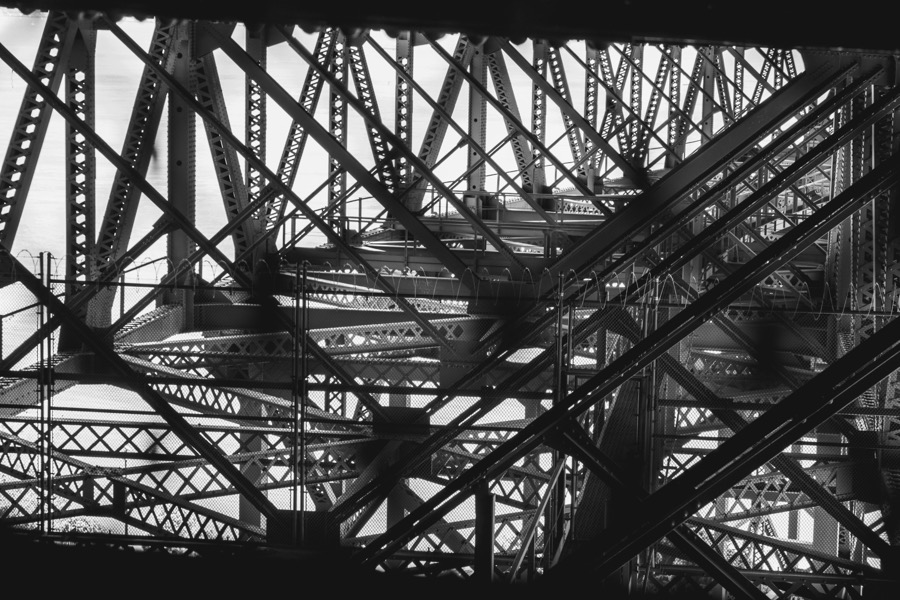
La charpente du monde
San Francisco, avril 2017
Tirage pigmentaire sur papier Hahnemühle Photo Rag Baryta
40 × 60 cm, hors cadre · Édition de 5

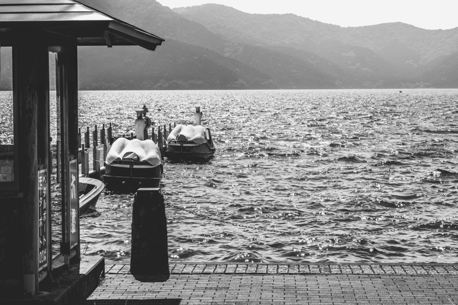
L’autre côté
Hakone, juillet 2017
Tirage pigmentaire sur papier Hahnemühle Photo Rag Baryta
40 × 60 cm, hors cadre · Édition de 5

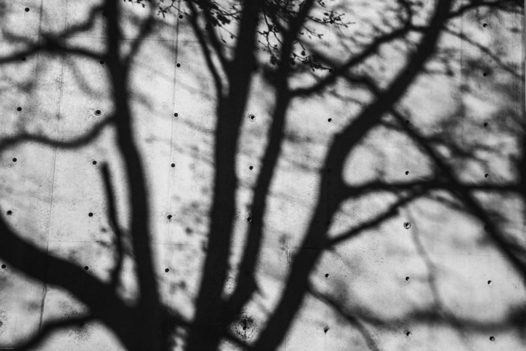
Les revenantes
Provence, décembre 2017
Tirage pigmentaire sur papier Hahnemühle Photo Rag Baryta
40 × 60 cm, hors cadre · Édition de 5

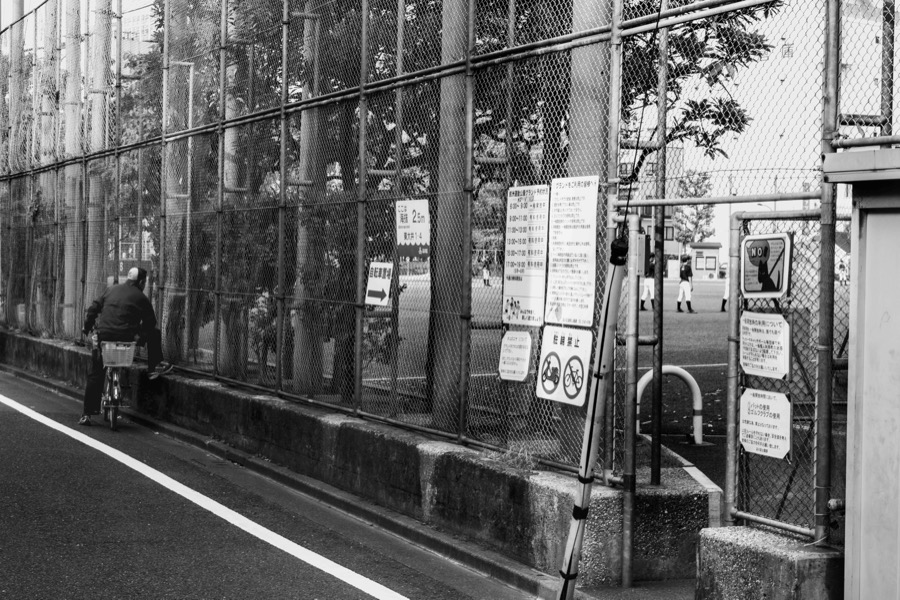
Le détour
Tokyo, mai 2017
Tirage pigmentaire sur papier Hahnemühle Photo Rag Baryta, contrecollé sur aluminium
80 × 120 cm, hors cadre · Édition de 3

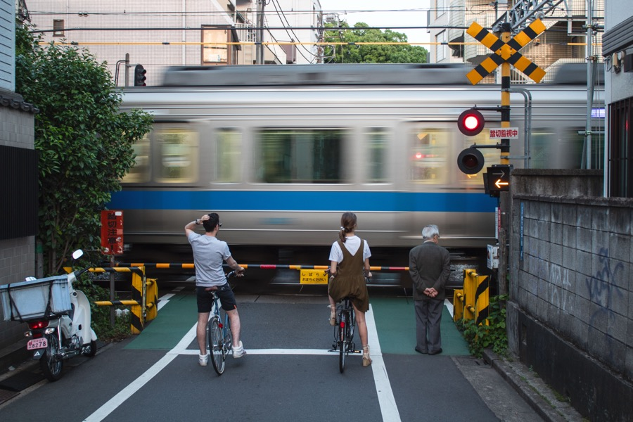
Quiétude
Nakano, mai 2017
Tirage pigmentaire sur papier Hahnemühle Photo Rag Baryta
40 × 60 cm, hors cadre · Édition de 5

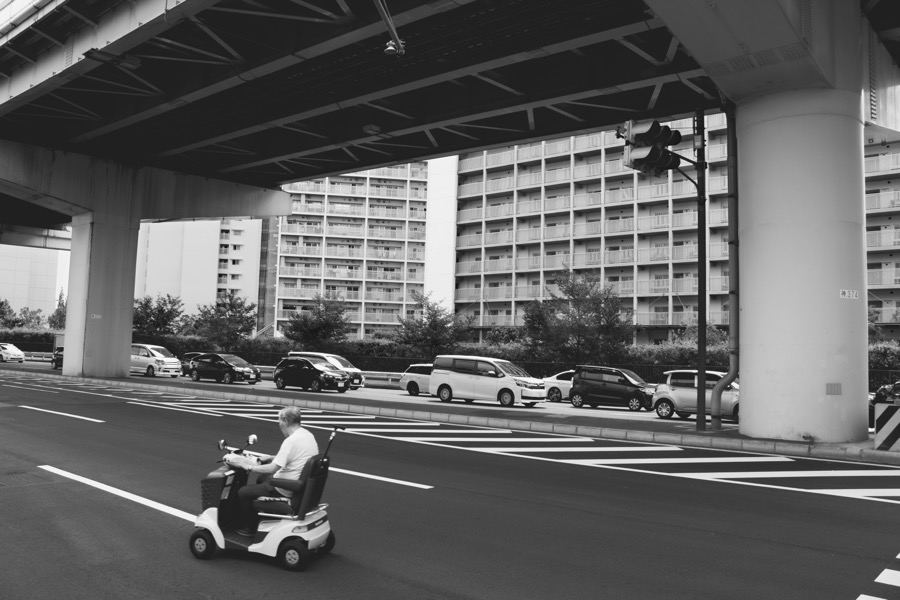
La traversée
Tokyo, juillet 2017
Tirage pigmentaire sur papier Hahnemühle Photo Rag Baryta
40 × 60 cm, hors cadre · Édition de 5

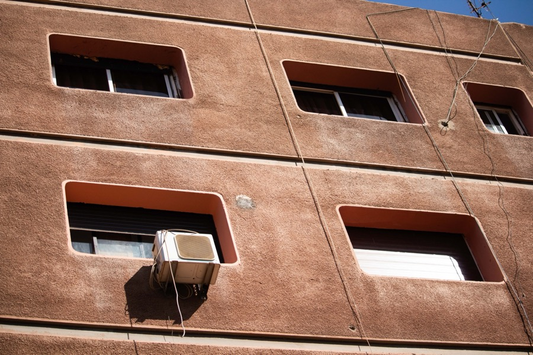
Habiter l’absence
Marrakech, octobre 2017
Tirage pigmentaire sur papier Hahnemühle Photo Rag Baryta
40 × 60 cm, hors cadre · Édition de 5

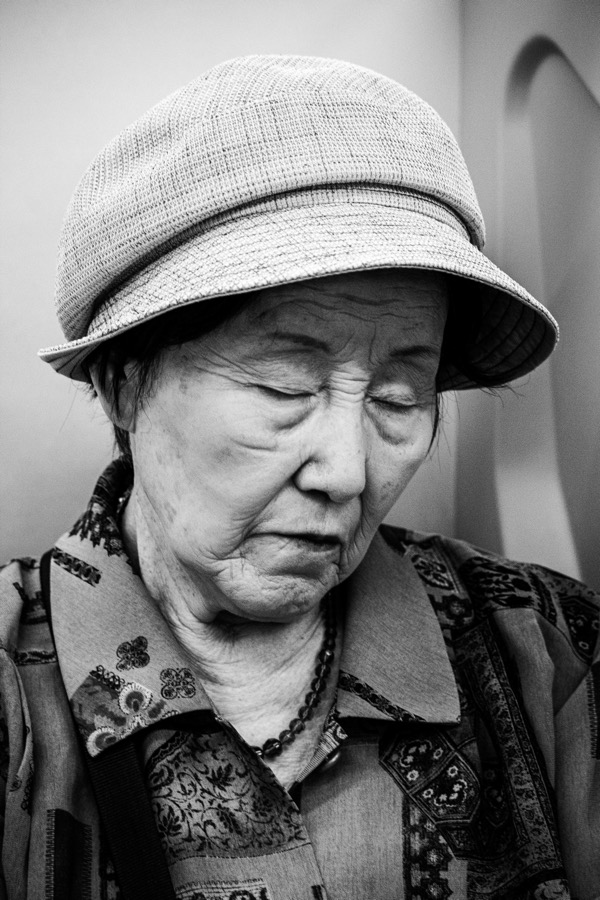
Le songe éveillé
Shimoda, juillet 2017
Tirage pigmentaire sur papier Hahnemühle Photo Rag Baryta
60 × 40 cm, hors cadre · Édition de 5

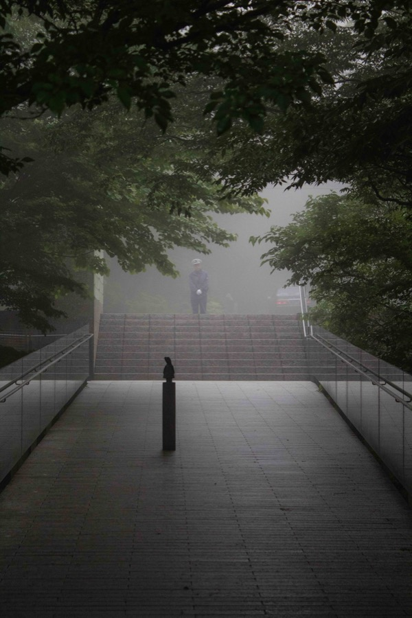
L’attente
Hakone, juillet 2017
Tirage pigmentaire sur papier Hahnemühle Photo Rag Baryta, contrecollé sur aluminium
120 × 80 cm, hors cadre · Édition de 3

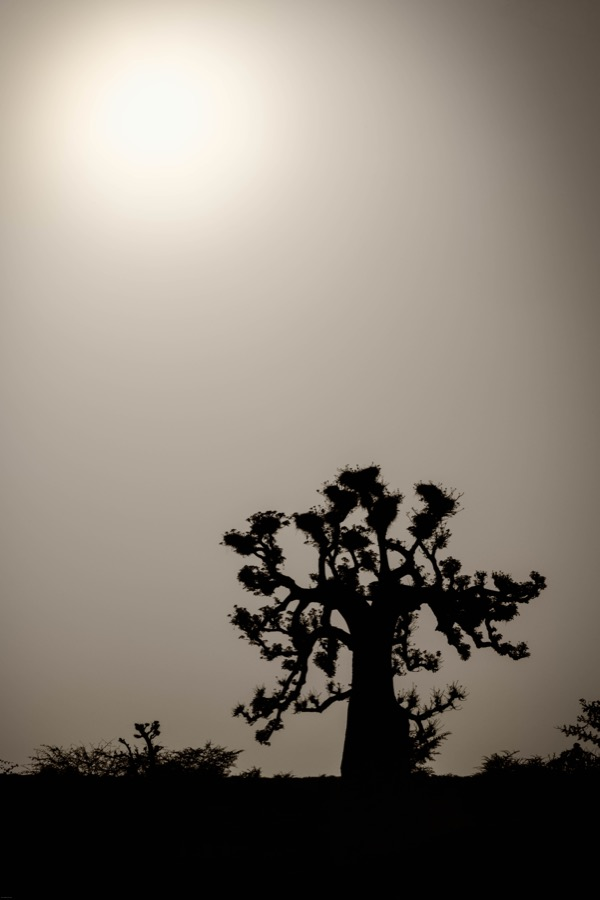
La Figure de l’absence
Sine-Saloum, mai 2019
Tirage pigmentaire sur papier Hahnemühle Photo Rag Baryta, contrecollé sur aluminium
120 × 80 cm, hors cadre · Édition de 3

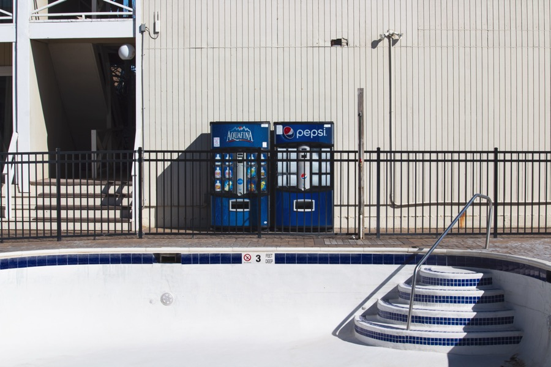
Hors saison
Los Angeles, février 2018
Tirage pigmentaire sur papier Hahnemühle Photo Rag Baryta
40 × 60 cm, hors cadre · Édition de 5
Texte d’exposition
Ce Qui Demeure
Cette toute première exposition photographique d’Arnaud de Turckheim (né à Paris en 1990) nous accueille par un arbre majestueux, La Figure de l’absence, un baobab centenaire qui se dresse, seul, face à la lumière. Avant même que le visiteur ne découvre les scènes du quotidien, cette silhouette impose une présence silencieuse. Elle constitue un seuil, une première image qui donne le ton, le leitmotiv qui est au cœur de l’exposition : être là sans s’imposer, occuper l’espace tout en laissant place au regard.
Cet arbre entre en résonance avec la stature du photographe, dont la grande taille constitue un trait physique singulier. Il serait hasardeux d’en déduire directement une manière de photographier ; pourtant, cette proximité ouvre une lecture possible. À une présence physique imposante peut répondre une posture photographique faite de discrétion, de retrait et d’observation. Le photographe est là, attentif et réceptif aux manifestations de la vie, mais ne cherche pas nécessairement à occuper le premier plan. Son existence se manifeste moins par l’affirmation de soi que par la qualité de sa perception, par sa façon de se tenir au plus près du réel tout en lui laissant son autonomie.
L’ensemble des œuvres réunies dans Ce Qui Demeure a été réalisé dans différents environnements, au fil des rencontres et des situations qui ont captivé Arnaud de Turckheim. Pourtant, l’exposition ne cherche pas à restituer ces lieux de vie selon une géographie ou une chronologie. Leur ancrage compte, mais il ne constitue pas le sujet principal. Il ne s’agit ni d’un inventaire ni d’une succession de décors : les photographies se détachent de leur contexte initial pour entrer en symbiose les unes avec les autres. D’un pays à l’autre, d’une scène quotidienne à une ombre, se dessine une même manière d’être au monde et de regarder ce qui l’entoure.
La série se construit autour de la notion d’intervalle : un espace de transition entre deux états, entre apparition et disparition, mouvement et immobilité, proximité et distance. Cette dernière saisit des moments où quelque chose semble suspendu, à la frontière entre ce qui se déroule et ce qui vient de s’achever. Le réel continue, mais l’image en retient une empreinte.
Le titre de l’exposition, Ce Qui Demeure, naît de cette tension entre ce qui passe et ce qui persiste. Pourtant, quelque chose subsiste de ces instants : une forme, une relation entre un corps et son environnement, parfois simplement la sensation d’un moment vécu.
Sans en établir une filiation directe, le travail d’Arnaud de Turckheim pourrait s’inscrire dans l’histoire de la photographie contemporaine et plus précisément la photographie documentaire, qui à partir des années 1950 déplace progressivement l’attention de l’évènement vers l’expérience du quotidien.
Chez Harry Callahan1, la lumière et les ombres deviennent des éléments essentiels de la composition. Son intérêt pour les formes simples et les contrastes trouve un reflet particulier dans Les Revenantes, où l’ombre semble conserver la mémoire d’un corps, et dans Les Porteurs de lumière, où les figures des travailleurs et leurs ombres se répondent, ouvrant un espace entre le vivant et sa trace.
Chez Robert Frank2, le quotidien se donne à voir par fragments, sans que les images ne composent obligatoirement un récit complet. Les scènes de rue et les figures croisées conservent une part d’incertitude. C’est ce qu’envisagent La Traversée et Le Détour, où le déplacement ne devient pas le prétexte à raconter une histoire de voyage, mais l’occasion de saisir un instant dont le sens reste ouvert.
Chez Stephen Shore3, c’est le regard porté sur les lieux ordinaires et les détails du monde contemporain qui entre en lien avec l’exposition. Cette approche trouve un écho dans Hors saison, où la piscine vide semble privée de sa fonction habituelle. Il n’y a aucune volonté de chercher l’évènement spectaculaire : il accorde au lieu, à sa lumière et à son organisation une importance qui transforme notre perception du banal.
Quant aux portraits, ils élargissent le propos. Ces derniers initient entre autres un dialogue avec Nan Goldin4, photographe américaine mondialement reconnue, dont le travail explore l’intimité, la proximité avec les personnes photographiées et la capacité de l’image à conserver la trace d’une expérience vécue. Son esthétique, parfois marquée par le grain, le flou ou la lumière directe, confère aux images une immédiateté sensible, comme si l’image portait en elle les conditions mêmes de son existence. Cette singularité est particulièrement perceptible dans L’Apparition, où le grain et la texture photographique participent à la présence du sujet. On retrouve ici cette qualité sensible de la photographie, sa capacité à abriter une forme de fragilité et d’imperfection, plutôt qu’une similitude de sujet ou de démarche autobiographique. Dans La Gardienne ou Le Songe éveillé, les portraits ne cherchent pas à tout révéler : ils préservent une part de retrait, une zone d’opacité qui laisse au visage sa liberté et son mystère.
Au-delà de ces rapprochements, on perçoit bien ici les diverses prouesses techniques propres à ce médium. Arnaud de Turckheim en saisit toutes les subtilités, que cela résulte de l’accidentel ou du volontaire. L’ensemble photographique garde son autonomie et sa part d’indétermination.
Une question traverse toute la série : Qu’est-ce qui demeure lorsque tout continue de passer ? Est-ce le corps, le lieu, la lumière, la mémoire de ce qui a été vu ? Ou bien est-ce une attention portée au monde, grâce à laquelle un instant ordinaire acquiert une existence nouvelle ?
Le photographe se tient à cette frontière. Il est indispensable à l’image, mais il n’a pas besoin de s’y manifester. Être là, regarder, attendre - puis laisser le réel continuer sans soi.
Ce qui demeure n’est donc pas forcément ce qui dure le plus longtemps. C’est ce qui survit au passage sans se confondre avec l’immobilité, ce que l’image préserve sans prétendre le retenir tout entier. Entre le monde qui continue et la photographie qui en garde la trace, quelque chose reste - fragile, incertain mais désormais visible pour tous.
Pierre El Khoury
- 1 Harry Callahan (1912-1999), photographe américain majeur dont l’œuvre intime et expérimentale s’articule autour de trois grands sujets, sa femme (Eleanor), la ville et la nature.
- 2 Robert Frank (1924-2019), photographe et réalisateur américano-suisse, célèbre pour son livre iconique The Americans (1958), qui a révolutionné la photographie documentaire par son regard subjectif et sans compromis sur la société américaine.
- 3 Stephen Shore (né en 1947), photographe pionnier américain qui a révolutionné l’histoire de l’art des années 1970 en imposant la photographie couleur et la beauté brute du quotidien ordinaire - stations-service, repas, motels - comme des sujets artistiques majeurs.
- 4 Nan Goldin (née en 1953), photographe américaine et figure majeure de la photographie contemporaine, qui transforme son journal intime - fait d’amour, de marginalité, de violence - en une œuvre politique et universelle.
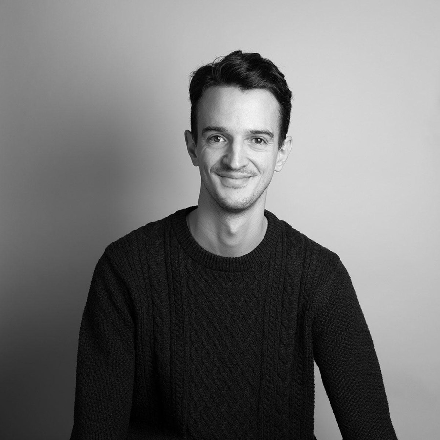
Arnaud de Turckheim
L’artiste
Bio
Ingénieur de formation, Arnaud de Turckheim photographie depuis les années 2000. Une pratique d’abord privée, tenue en retrait pendant près de vingt ans, qu’il choisit aujourd’hui de rendre publique pour la première fois.
Élevé entre Paris et la Provence, dans une famille où l’image est une langue familière - sa mère est photographe -, il vit en Chine, en Angleterre puis au Japon, avant de rentrer en France en 2017. De ces années nomades, il garde un goût pour l’observation discrète : il ne cherche pas l’événement, mais ce qui affleure dans l’ordinaire - un geste, une lumière, une géométrie. Ses proches le décrivent volontiers comme un « geek cowboy », partagé entre la logique de l’ingénieur et l’attrait des grands espaces.
Son écriture photographique est reconnaissable : contre-jours tenus, lumières rasantes, contrastes francs, nuances de gris et de vert. Le portrait rapproché y croise l’abstraction urbaine, l’ethnographie discrète y répond à une forme de méditation formelle. Les images sont numériques, honnêtes : il revendique une photographie cadrée par l’œil, sans artifice.
Ce Qui Demeure réunit dix-huit tirages pris au Japon, en Californie, au Maroc, au Sénégal et en France. L’exposition est assumée comme pré-IA : l’image telle qu’elle se faisait avant la bascule générative, cadrée par un regard et non par un modèle. Une première monstration, et l’ouverture d’une conversation que l’auteur entend prolonger.
Contact